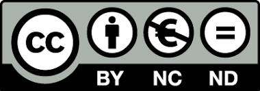

Knowledge Pool
2021-12-01
Willkommen

Der Knowledge Pool ist eine sich ständig weiterentwickelnde Datenbank, die Teil des DAVeMoS Projekts ist. Sie zielt darauf ab, Konzepte und Belege für die systemischen Auswirkungen der Digitalisierung und Automatisierung des Verkehrs zu sammeln. Er ist ein Gemeinschaftswerk der DAVeMoS-Teammitglieder, die mit ihrem Fachwissen, ihren Ideen und Verbesserungsvorschlägen zu Inhalt und Design beigetragen haben:
- Dr. Msc. MA (Hons) Martyna Bogacz
- B.Sc. Veronika Hebenstreit
- B.Sc. Gregor Husner
- Univ. Prof. Dr. Yusak Susilo
Die Autoren freuen sich über Feedback, Fragen und Beiträge der Leser. Für weitere Eingaben wenden Sie sich bitte an die korrespondierende Autorin Martyna Bogacz unter der folgenden E-Mail-Adresse: davemos.library@boku.ac.at.

Dieses Werk ist lizenziert unter einer Creative Commons Attribution-NonCommercial-NoDerivatives 4.0 International License.
Die Autoren übernehmen keine Verantwortung oder Haftung für etwaige Fehler oder Unvollständigkeiten im Inhalt dieses Werkes. Die im Knowledge Pool enthaltenen Informationen dienen lediglich der allgemeinen Information.
Inhaltsverzeichnis
- Einleitung
- Physische Straßeninfrastruktur
- Gesonderte Fahrspuren für vernetzte und automatisierte Fahrzeuge (connected and automated vehicles - CAV)
- Operative Gestaltungsbereiche
- Informationssystem für Bahnübergänge
- Elektrisches Straßensystem (Electric road system - ERS)
- Fahrspuren für Fahrzeuge mit hoher Auslastung (high-occupancy vehicle - HOV)
- Prioritätssysteme für den öffentlichen Verkehr
- Transformation des öffentlichen Raums und digitale Lösungen
- Gesonderte Fahrspuren für vernetzte und automatisierte Fahrzeuge (connected and automated vehicles - CAV)
- Verwaltung der Straßenverkehrsinfrastruktur
- Verkehrsmanagement
- Staugebühren (Congestion charging)
- Platooning
- Verkehrsinformationen und -überwachung in Echtzeit
- Kooperativ - intelligentes Verkehrssystem (Cooperative - intelligent transport system)
- Dynamische Routenführung
- Variable Geschwindigkeitsbegrenzungen und dynamisches Beschilderungssystem
- Intelligente Verkehrssignalsteuerung
- Flottenmanagement für Personentransport und Gütertransport
- Verwaltung des städtischen Zugangs (Urban Access Management)
- Staugebühren (Congestion charging)
- Digitale Straßeninfrastruktur und Konnektivität
- Fahrgastinformationssystem
- Multimodales integriertes System
- Lösungen für die erste und letzte Meile
- Fahrpreise für den öffentlichen Personennahverkehr
- Mobilität als Dienstleistung - Mobility as a service (Maas)
- Park and ride
- Kontaktlose Karten für öffentliche Verkehrsmittel
- Informationen und Unterstützung für Menschen mit besonderen Bedürfnissen
- Mobilitätszentren - Mobility hubs
- Schienenverkehrstelematik für Passagiere und Güterverkehr
- Lösungen für die erste und letzte Meile
- Automatisiertes Fahren
- Bordtechnologie für vernetzte und automatisierte Fahrzeuge
- Güterverkehr und gewerblicher Transport
- Fahrzeuge der kollektiven Mobilität
- Big data
- Gemeinschaftliche Mobilität - Shared mobility
- Alternative Energieträger
- Referenzen
Der Knowledge Pool wurde zusammengestellt am:
## [1] "01 December 2021"